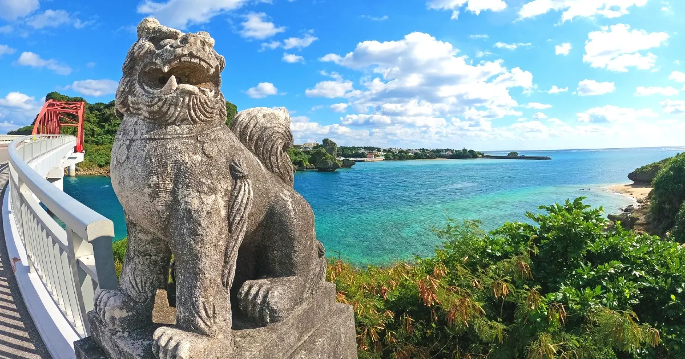
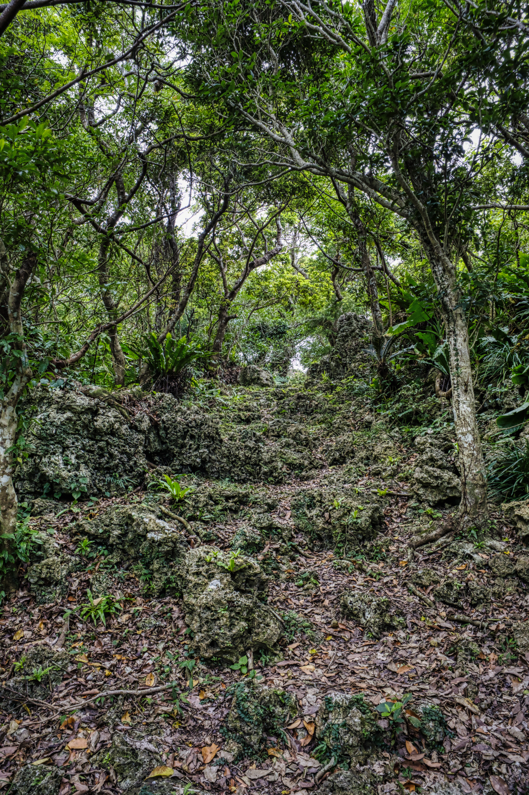

Conhecer a terra dos meus antepassados e explorar suas paisagens.
Viagem para o Japão (Okinawa)
Um dos meus maiores sonhos é conhecer o Japão, principalmente Okinawa, uma região que tem um
significado especial para mim por causa da minha descendência japonesa.
Tenho muita curiosidade em conhecer a cultura, os lugares e as tradições de onde vieram meus antepassados.
Seria uma experiência muito especial poder conhecer pessoalmente um lugar que faz parte da história da minha família.

Fig 1. Imagem de uma das praias de Okinawa
Visitar as ruínas do Castelo Kakinohana
Um dos lugares que eu gostaria muito de conhecer em Okinawa são as ruínas do Castelo Kakinohana,
principalmente por carregarem o mesmo sobrenome que eu.
Seria muito interessante conhecer pessoalmente um lugar que possui uma ligação tão curiosa
com o meu próprio nome e com a história de Okinawa.

Fig 2. Imagem das ruínas do Castelo Kakinohana
Visitar as ruas de Kokusai Dori
Outro lugar que eu adoraria conhecer é a Kokusai Dori, em Okinawa.
Gosto muito de comer e de caminhar, então acho que seria um lugar perfeito para mim.
Quero poder conhecer as lojas, experimentar as comidas locais e simplesmente andar pela rua
aproveitando o ambiente e a cultura de Okinawa.